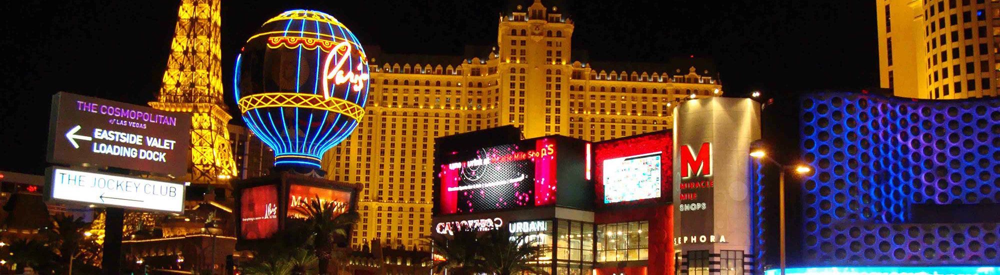
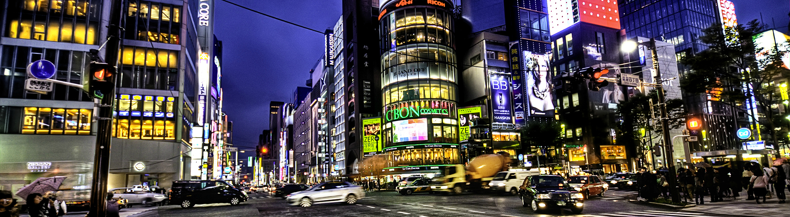

-

- 
- 
Europa
Vacanze e weekend a tema per scoprire l’Europa e le sue capitali Da Lisbona a Varsavia, da Atene alla Scandinavia, dalla Francia all’Austria. Le vacanze in Europa targate Glas Travels sono affascinanti e istruttive, nonché piacevoli e convenienti. Le proposte più allettanti riguardano i weekend in Europa “mirati”, ossia consigli e soluzioni per non perdere tempo e organizzare un fine settimana all’insegna - a seconda delle preferenze - dell’arte, dello sport, della buona tavola, della famiglia o della cura del proprio corpo. Molte sono le mete favolose anche per un soggiorno balneare in Europa.
America
La prima cosa che stupisce i visitatori è la vastità dei suoi spazi: montagne maestose, laghi grandi come mari, fiumi lunghissimi, enormi parchi nazionali dalla bellezza selvaggia, città interminabili e ampie pianure con distanze quasi improbabili se percorse via terra. Ognuno dei 50 Stati che formano la nazione degli Stati Uniti è in grado di riservare continue sorprese al turista. Le Americhe sono un continente, da scoprire con più viaggi, seguendo i propri interessi, per poter cogliere le mille sfaccettature della loro natura e dei loro abitanti.
Asia
Tutte le strade oggi portano a Pechino, proprio come un tempo portavano a Roma. La Cina è, infatti, il Paese più popolato del mondo, dal nobile passato e dal futuro promettente, locomotiva economica del pianeta e frontiera avanzata della globalizzazione. Tuttavia, questo sterminato paese è per larghi tratti ancora quello che scoprì Marco Polo, una meravigliosa terra, misteriosa e affascinante, che custodisce segreti e arcani da svelare. Un originale mix di spiritualità confuciana e pragmatismo mercantile, di antica sapienza ed efficiente dinamismo.
Africa
Bella, oziosa, rilassata e piena di gioia di vivere: Città del Capo è veramente una piccola metropoli da visitare con lentezza, lasciandosene affascinare. Panorami mozzafiato, dimore storiche, villaggi costieri, montagne leggendarie come Table Mountain o Cape of Good Hope, il mitico Capo di Buona Speranza. La “città madre” del Sudafrica è il luogo dove la Nazione è nata, in cui le diverse culture del Paese si sono stratificate, combattute e pacificate.
I parchi nazionali del sudafrica rappresentano ovviamente una delle principali attrattive di questo vasto paese. Tutti i parchi e le riserve beneficiano di infrastrutture di alto livello e all’avanguardia. Alcuni dei parchi più estesi propongono escursioni naturalistiche guidate da ranger. Anche se non è sempre necessaria la presenza di un accompagnatore, è comunque certo che muovendosi con l’ausilio di una guida esperta è possibile vedere e imparare molto di più che non da soli, oltretutto in totale sicurezza. Il sudafrica è probabilmente il paese che offre le migliori opportunità di osservare i cosiddetti “big five” e cioè rinoceronti, bufali, leoni, leopardi ed elefanti.
Oceania
"L’Australia è il più secco, piatto, caldo, arido sterile e climaticamente aggressivo di tutti i continenti abitati” - Bill Bryson (Un paese bruciato dal sole)
Eppure malgrado questa sia l’istantanea che abbiamo impresso a fuoco nel nostro immaginario collettivo (spesso anche in quello degli stessi Australiani), questa isola-continente è estremamente “cittadina”, l’80 per cento dei suoi abitanti vive in città. Monumento alla modernità, alla razionalità e al gusto del buon vivere, le città australiane sono verdi di parchi e giardini, piene di luoghi di ritrovo, di negozi, ristoranti, eventi culturali e mondani. Non sono attrazioni o “trappole” turistiche, ma luoghi dove si respira una Australia diversa e altrettanto vera di quella dell’outback. Vestiti in giacca e cravatta e con la ventiquattr’ore in mano gli australiani sono ancora se stessi: informali, accomodanti, ma non ingenui. Decisi a rivendicare la propria unicità, desiderosi di affermarsi, diffidenti, aperti al nuovo e soprattutto capaci ancora di credere che la ricchezza della vita stia nel confrontarsi e raccontarsi. Incontrateli.
Che cosa dicono di noi. Wired Magazine
Chi gestisce il sito è molto efficiente. In due giorni, il viaggio dei propri sogni è bello che prenotato. Glas Travels scalerà sicuramente le classifiche per il miglior TOP TRAVEL SITE.

Glas Travels Chi siamo.
Compagnia di viaggi da poco sul mercato, che già non ha tradito i clienti che l'hanno scelta.
Viaggi all’insegna della conoscenza approfondita di una destinazione, viaggi pensati per suscitare emozioni e liberare fantasie. Itinerari che conducono attraverso storia, tecnologia e abitudini. Venite con noi, con la nostra passione, a riscoprire cosa si trova nel mondo! E ricordate: non come turisti, ma come ospiti!
Scopri di più su di noi